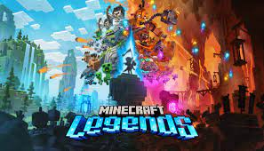

¿Cuándo y quién creó Minecraft?
Minecraft fue creado inicialmente por Markus "Notch" Persson, un programador de juegos sueco. Markus Persson había trabajado para King durante más de cuatro años hasta 2009, cuando empezó a desarrollar Minecraft a tiempo completo. Su idea surgió de un juego que estaba desarrollando titulado "RubyDung", un juego isométrico de construcción de bases. Además, Markus se inspiró al ver Infiniminer, un juego de minería basado en bloques. Al combinar la perspectiva en primera persona, los gráficos en bloques y los elementos de construcción de Infiniminer, junto con los elementos de RPG y construcción de bases de RubyDung, nació Minecraft.
Markus permaneció con el creciente equipo de Mojang (del que fue miembro fundador) hasta septiembre de 2014, cuando Microsoft anunció un acuerdo de adquisición de 2.500 millones de dólares para comprar la empresa. A partir de ahí, decidió alejarse del desarrollo de juegos.
El diseñador principal de Minecraft desde 2011 ha sido Jens "Jeb" Bergensten, que había estado codesarrollando Minecraft con Persson desde 2010, asumió el papel de diseñador principal en 2011 y asumió el control creativo total en 2014 tras la marcha de Persson.
La versión original de Minecraft, que es la Java Edition del juego, comenzó a desarrollarse en 2009, con varias Alfas y Betas que llevaron a lo largo de 2010 hasta principios de 2011. La versión completa, titulada "1.0 - Adventure Update" salió el 18 de noviembre de 2011. Esto hace que Minecraft tenga 14 años desde su concepción inicial, y 12 años desde su lanzamiento público completo.
Creador de minecraft
Modos de juego
Supervivencia:
El modo supervivencia (survival en inglés) se basa en la vida real combinada con un poco de fantasía y se trata de la supervivencia al ataque de las múltiples criaturas que surgen en la oscuridad o de noche. El máximo aguante que tienen los personajes consta de 10 corazones (20 puntos de salud). En este modo las herramientas, armas y armadura se gastan con el uso.
Creativo:
En el modo creativo (creative en inglés) se centra enteramente en el aspecto de la construcción libre. Los jugadores poseen un suministro ilimitado de todos los bloques y objetos del juego, que pueden colocar y destruir de forma instantánea. Además, no son atacados por los monstruos, son inmunes a todo daño (aunque sí pueden morir cayendo al vacío si están en Java Edition, o mediante el comando /kill) y pueden volar libremente por el mapa. En este modo no se pueden romper bloques sosteniendo espada, para prevenir la destrucción del entorno cuando el jugador golpea o ataca.
Extremo:
El modo extremo (hardcore en inglés) es idéntico al modo supervivencia, con la diferencia de que tras la muerte del jugador este ya no puede volver a revivir y la dificultad está fijada en difícil.
Espectador:
El modo espectador permite a los jugadores volar a través de bloques y ver el mundo sin interactuar con él. En este modo, la barra de acceso rápido se convierte en un menú que permite al jugador teletransportarse a los jugadores en la partida. También es posible ver desde el punto de vista de otro jugador o criatura.
Aventura:
El modo aventura (adventure en inglés) está destinado a los jugadores que se dedican a crear mapas para usuarios que deseen jugar en línea o solos. Este modo de juego se basa en los siguientes criterios que afectan al jugador en distintos sentidos:
- El jugador solo puede romper un bloque si tiene la herramienta adecuada, y esta programada con comandos para que pueda ser rota.
- Si el creador del mapa así lo configura, la dificultad no puede ser modificada por los jugadores.
Multijugador
El modo multijugador en Minecraft permite que varios jugadores interactúen y se comuniquen entre sí en un solo mundo. Está disponible a través de multijugador directo de juego a juego, juego en LAN, pantalla dividida local (solo consola) y servidores (alojados por jugadores y empresas). Los jugadores pueden ejecutar sus propios servidores, utilizar un proveedor de alojamiento o conectarse directamente al juego de otro jugador a través de Xbox Live. Los mundos de un solo jugador tienen soporte para redes de área local, lo que permite a los jugadores unirse a un mundo en computadoras interconectadas localmente sin una configuración de servidor. Los servidores multijugador de Minecraft están dirigidos por operadores de servidores, quienes tienen acceso a los comandos del servidor, como configurar la hora del día y teletransportar a los jugadores. Los operadores también pueden establecer restricciones en cuanto a qué nombres de usuario o direcciones IP pueden o no ingresar al servidor. Los servidores multijugador ofrecen una amplia gama de actividades, y algunos tienen sus propias reglas y costumbres únicas. El servidor más grande y popular es Hypixel, que ha sido visitado por más de 14 millones de jugadores únicos. El combate jugador contra jugador (PvP) se puede habilitar para permitir la lucha entre jugadores. Muchos servidores cuentan con complementos personalizados que permiten acciones que normalmente no son posibles.
Mas juegos sobre Minecraft
Minecraft Dungeons:
Minecraft Dungeons (en español, Minecraft Mazmorras) es un videojuego perteneciente al género de rol de acción que se lanzó el 26 de mayo de 2020 para Windows, Xbox One, Nintendo Switch y PlayStation 4; posteriormente, se lanzó para macOS, Xbox Series X|S y PlayStation 5. Desarrollado por Mojang, la conversión a las consolas fue realizada por Double Eleven. Se puede jugar solo o en línea con hasta cuatro jugadores.
Minecraft Legends:
Minecraft Legends se compone de dos partes. Por un lado, una campaña en un mundo abierto enorme generado procedimentalmente. La historia nos sitúa en un universo donde todos conviven: aldeanos, creepers con sombreritos graciosos, zombis y animales. Hasta que llegan los piglins, unos cerdos antropomórficos de diseño simpático cuyo único afán es la destrucción. Así, en esa campaña habrá que ir aglutinando un ejército de mobs (así se llaman a los enemigos en el juego de Mojang) para ir destruyendo las bases de los invasores. Se podrá jugar en cooperativo online (no hay multijugador local) con hasta otros tres jugadores, sin importar si juegan en PC, PlayStation, Xbox o Switch; sin embargo, los usuarios de PS4, Xbox One y la máquina de Nintendo que creen la partida solo podrán invitar a un jugado por las limitaciones del hardware.
Miecraft Education:
Minecraft: Education Edition es la versión educativa del videojuego Minecraft. Esta herramienta permite crear experiencias de Aprendizaje Basado en el Juego con las que se podrán trabaja habilidades STEM, desarrollar la creatividad y plantea experiencias de colaboración y resolución de problemas entre los estudiantes.

Enlaces
Pincha aqui si quieres saber mas sobre minecraft